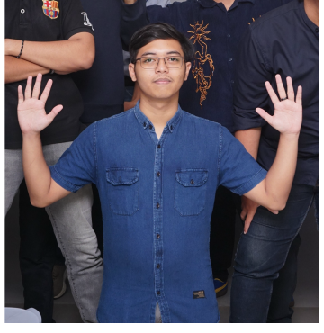

</HELLO I'M FARKHAN>
A Computer Engineer Student
Start Scrolling or Click Below
BIODATA
Name: Muhammad Farkhan Fadillah
Role: Computer Engineer
Location: Indonesia
I am a passionate individual dedicated to creating clean, efficient code and delightful user experiences. I specialize in turning complex problems into simple, beautiful, and intuitive designs.
I love tuning project that include Artificial Intelegence and Machine Learning to create smart applications that can learn and adapt to user needs. My goal is to leverage technology to make a positive impact on people's lives.

PROJECTS
E-Commerce Dashboard
Web Development • 2023
A comprehensive dashboard for managing online store inventory and sales analytics.
Portfolio Template
Design & Frontend • 2024
A minimalist, retro-styled portfolio template built with raw HTML and CSS.
ACADEMIC
Master of Computer Science
University of Technology • 2020 - 2022
Bachelor of Informatics
State University • 2016 - 2020
CONTACT
@Apricot_Schwein
Apricotschwein@gmail.com
Muhammad Farkhan Fadillah